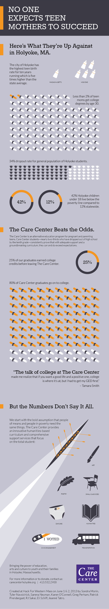

No One
No One
Expects Teen
Mothers to Succeed
Here’s What They’re Up Against in Holyoke, MA.
- The city of Holyoke has the highest teen birth rate for ten years running which is five times higher than the state average.
- Less than 2% of teen moms get college degrees by age 30.
- 34% dropout rate for general population of Holyoke students.
- 42% Holyoke children under 18 live below the poverty line compared to 12% statewide.
The Care Center Beats the Odds.
The Care Center is an alternative education program for pregnant and parenting teens. Care Center students—nearly two-thirds who have dropped out of high school by the tenth grade—consistently prove that with adequate support and a groundbreaking curriculum, they can and do exceed expectations.
- 25% of our graduates earned college credits before leaving The Care Center.
- 80% of Care Center graduates go on to college.
“The talk of college at The Care Center made me realize that if you want a good life and a positive one, college is where it’s at, but I had to get my GED first.”
– Tamara Smith
But the Numbers Don’t Say It All.
We start with the bold assumption that people of means and people in poverty need the same things. The Care Center provides an innovative humanities-based curriculum and comprehensive support services that focus on the total student:
- Art
- Poetry
- Small Class Sizes
- Daycare
- Humanities
- Civic Engagement
- Transportation